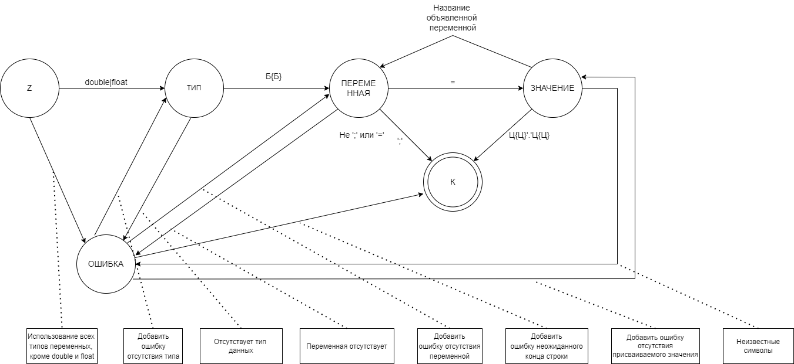

Метод анализа
Исходя из того, что грамматика является автоматной, анализ будет
осуществляться при помощи графа конечного автомата:

Для диагностики и нейтрализации ошибок использовался метод Айронса.
Основная идея – по контексту без возврата отбрасывать литеры, которые
привели к тупиковой ситуации (когда продолжение анализа по грамматике
невозможно), и продолжать разбор.